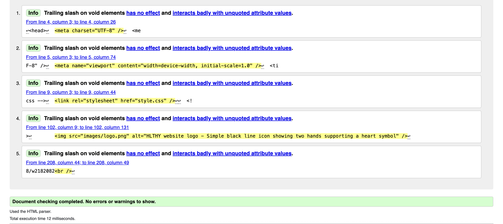
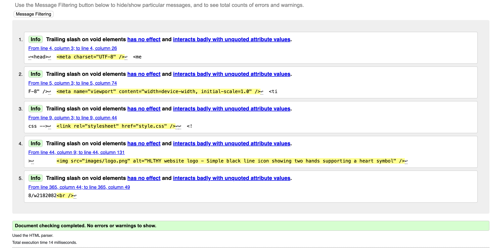
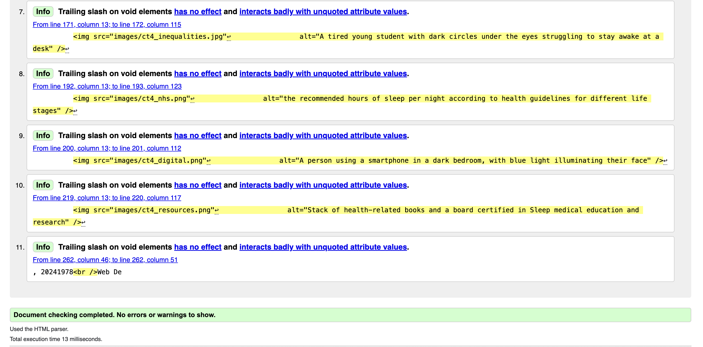

HLTHY Website · Good Health & Well-being (SDG 3) · Web Design & Development 4COSC011W · 2025/26
Student Name: Suthagan Shanheeshan | Student ID: w2182082 / 20241978
Pages validated: profile.html · sitemap.html · content_ST4.html
pageEditor_ST4.html and validation_ST4.html are excluded per the coursework specification.
Validated after completing the full JavaScript profile-building logic, progress bar, and all step controls. Passed with no errors.

Validated after completing all SVG nodes, connector lines, links, and the legend. SVG within HTML5 validates as a single document. Passed with no errors.

Validated after writing all seven sections and adding the pull-quote and comparison grid components. Passed with no errors.

Errors encountered: The SVG sitemap initially produced a validation error because one of the SVG <a> elements was missing the href attribute (it had been included as a structural placeholder without a destination yet). The validator also flagged a stray closing </g> tag in the SVG from an early draft that was not removed. On the profile page, using role="tab" without a parent role="tablist" element produced a warning about incomplete ARIA widget patterns.
How they were resolved: The missing href was added once all file names were confirmed. The stray closing tag was removed. The ARIA role issue was resolved by wrapping the step buttons in a containing element with role="tablist", as required by the ARIA specification.
What I learned: SVG embedded in HTML validates as part of the same document — you cannot validate an SVG in isolation if it lives inside an HTML page. Using the "Direct Input" method on the W3C validator is the correct approach for this coursework. ARIA roles have strict parent-child requirements that are not obvious without reading the specification.